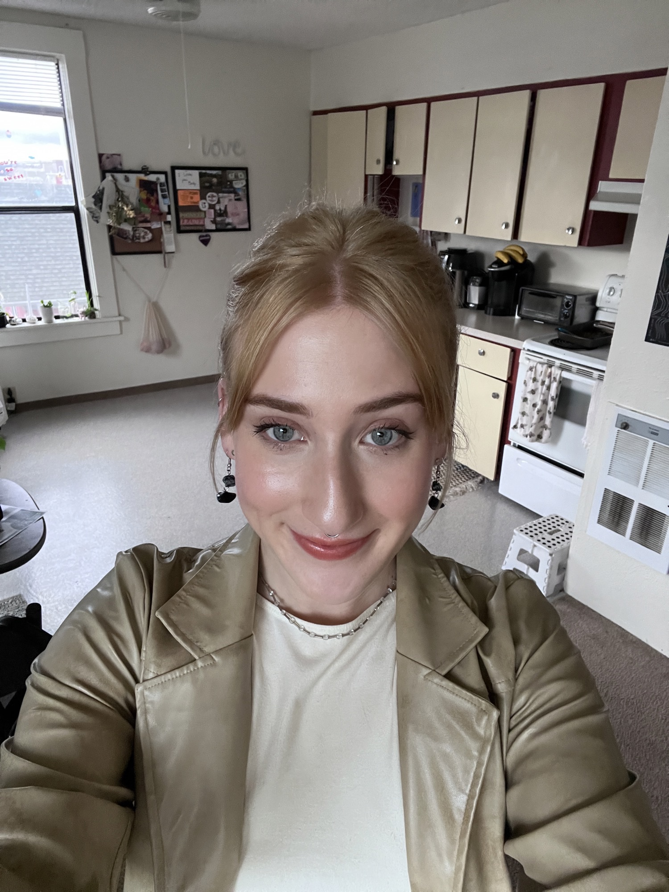

Navigation Links:
Hello, my name is Sophia and I am a senior studying graphic design at Western Washington University. My favorite color is sage green and my favorite animal is the gibbon. Gibbons are part of the ape family and are the most underappreciated because of how small and illusive they are. I am a senior attending WEstern Washington University and am studying graphic design. I am graduating Spring of 2023. I have two dogs, Bevers and Arlo. Bevers is one year old and Arlo is two years old. They are both golden retriever boarder collie mixes. I'm passionate about oil and watercolor painting. After I graduate I want to move to the East Coast and become a Graphics and Communications manager for a graphic design firm or a fashion publication. I am a sagittarius and some of my favorite artists are Blood Orange and Slater.
copyright nunns@wwu.edu